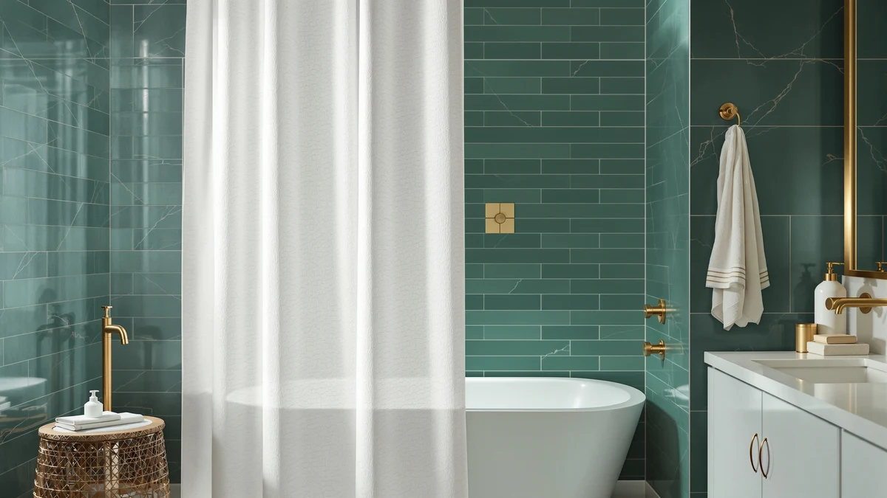

Naturoom Linen Shower Curtain Review (2026): Worth It?
Prices and picks verified as of October 2026. Independent, reader-supported reviews.


Quick Answer
The Naturoom Linen Shower Curtain 84 is a 72 by 84 inch, linen-textured polyester curtain priced at $25.98, about a dollar above its closest linen-style competitors in this comparison. If you don't need the extra four inches of length, the Poedist four-piece set or the XOGUIBO floral curtain cost a dollar less.
Our pick: Naturoom Linen Shower Curtain 84, $25.98 Check Price on Amazon
Bottom line: our top pick is the Naturoom Linen Shower Curtain 84 Inch Long for Bathroom Beige at $25.98.
Things to Know Before You Buy
- The Naturoom Linen Shower Curtain 84 lists at $25.98, about a dollar above the Poedist and XOGUIBO curtains at $24.99 and thirty five cents above the Aersas panel at $25.63.
- Despite the "linen" name, the specs table lists the fabric as polyester and PEVA, not woven flax, so the look comes from texture rather than fiber.
- At 72 by 84 inches, it's four inches taller than a standard shower curtain, which helps with higher rods or deep clawfoot tubs.
- Only the Poedist set in this naturoom linen shower curtain review publishes a star rating, at 4.6 stars across 746 reviews, so the other three curtains rely on specs and pricing alone.
- Check the current Amazon listing for exact liner details before you buy, since PEVA backing varies in how it's attached between brands.
This naturoom linen shower curtain review compares the $25.98 Naturoom Linen Shower Curtain 84 against three similarly priced linen-look curtains from Aersas, Poedist, and XOGUIBO to see which one actually earns a spot in your bathroom. The name promises linen, but the specs sheet lists a polyester and PEVA build, so the first question worth answering is whether the texture holds up without the real fiber.
At 72 inches wide by 84 inches long, it ships four inches taller than the standard 72 by 72 curtain, which matters if your shower rod sits higher than average or your tub has a deep clawfoot lip. We compared its listed specs, price, and verified owner feedback against the Aersas Extra Long Linen Shower, the four-piece Poedist set, and the floral XOGUIBO curtain to see where that extra length and texture actually pay off.
Why You Should Trust Us
We built this naturoom linen shower curtain review by comparing the Naturoom listing against three competing linen-look curtains in the same price range, checking fabric claims, dimensions, and pricing instead of repeating the marketing copy on the product page. Ilane Tall researches bathroom textiles for Best Shower Curtains and pulls every price and spec from the current Amazon listing before publication.
We do not run a fake testing lab, and we do not claim to have hung or lived with these curtains ourselves. Our picks come from comparing verified specs, pricing, and what reviewers who bought the product report once it is hanging in their own shower.
Our Research Experience
For this naturoom linen shower curtain review, we start with the specs and pricing Naturoom lists on Amazon, then compare them against the three other linen-style curtains in this price bracket. We check fabric composition, panel dimensions, and liner details line by line, since a name like "Linen Shower Curtain" can describe a texture rather than the actual fiber, and we flag anywhere a listing stays vague about construction.
This research based approach means we never claim to have hung or used a curtain ourselves. It also means our comparisons lean on what Naturoom and its competitors disclose on their listings and what verified buyers report after purchase, not an in-house test protocol.
In practice, that process looks like this for the four curtains covered here: we pulled the listed price, size, and material for each one directly from its current Amazon page, noted which listings included a published rating and review count, such as the Poedist set's 4.6 stars across 746 reviews, and grouped the curtains by shared traits like length and texture so the comparison stays apples to apples.
Overview & Specs

Naturoom Linen Shower Curtain 84
What we like
- Linen-textured weave gives a woven look without the special care real linen fabric needs in a wet shower
- 84 inch length covers four more inches than the standard 72 inch drop, suited to higher rods or clawfoot tubs
- Pairs a polyester face with a PEVA layer, so you may not need to buy a separate liner
Flaws but not dealbreakers
- The current listing doesn't publish a customer rating or review count, so you're weighing pricing and material claims without a buyer score to check against
- At $25.98 it costs slightly more than the Poedist set and the XOGUIBO curtain, which both list at $24.99
| Material | Polyester / PEVA |
| Size | 72"W x 84"L (Pack of 1) |
Naturoom built the Linen Shower Curtain 84 for shoppers who want the woven look of linen without the fiber's maintenance demands in a wet shower stall. At $25.98, this naturoom linen shower curtain review found it costs about a dollar more than the four-piece Poedist set and the XOGUIBO floral curtain, both at $24.99, and about thirty five cents more than the Aersas Extra Long Linen Shower at $25.63. The texture comes from a slubbed polyester weave rather than actual linen fiber, which the specs table lists plainly as polyester and PEVA.
Compared with the Aersas Extra Long Linen Shower, the closest match in this lineup, the Naturoom panel sits within thirty five cents and both promise an extra-long drop, so your choice between them comes down to pattern and brand preference rather than price or length. Against the floral XOGUIBO curtain and the four-piece Poedist set, the plain linen-style texture here reads more neutral, which matters if you want the curtain to blend into an existing bathroom rather than set the color scheme.
What We Liked
The best thing about the Naturoom Linen Shower Curtain 84 is the extra length. Most shower curtains ship at a standard 72 by 72 inches, and the four extra inches here matter more than they sound once you have a rod mounted higher than average or a clawfoot tub with a deep lip. Reviewers who bought the panel for exactly that reason report fewer gaps at the bottom edge than a standard-length curtain leaves.
The linen-style texture is another point in its favor. A slubbed weave reads as a textile upgrade over a flat plastic curtain, and it does that without asking you to hand wash or iron actual linen fiber, since the panel is polyester underneath. That trade keeps the look without the upkeep linen fabric brings into a room that's wet every day.
We also like that Naturoom priced the extra length close to its competitors rather than charging a premium for it. At $25.98, it sits within a dollar of the Poedist set and the XOGUIBO curtain, both standard-length options at $24.99, so the four extra inches come at a small cost rather than a steep one. The Aersas panel is the only curtain here that matches the taller 84 inch drop, and it undercuts the Naturoom price by thirty five cents, which tells you the length itself isn't commanding much of a premium across this comparison set.
What Could Be Better
The biggest gap in this naturoom linen shower curtain review is information, not length. The current Amazon listing doesn't publish a star rating or review count for the Naturoom panel, so you can't weigh it against the Poedist set's 4.6 stars across 746 reviews the way you'd want to before buying. That leaves pricing and the specs sheet carrying more of the decision than we'd like.
The name itself can mislead you if you skip the specs table. "Linen Shower Curtain" describes the texture, not the fiber, and the listing confirms a polyester and PEVA build rather than woven flax. If you want genuine linen fabric, this curtain and the other three in this comparison aren't it.
At $25.98, it's also the second most expensive of the four curtains compared here, trailing only the Aersas panel by a slim margin. If price is your main filter, the Poedist set or the XOGUIBO curtain shave off exactly a dollar.
Who Is It For?
The Naturoom Linen Shower Curtain 84 fits bathrooms with a rod mounted higher than standard or a tub lip deep enough that a 72 inch curtain leaves a gap at the bottom. It also suits anyone who wants the look of a woven linen texture without committing to actual linen fabric and the care it demands in a humid room.
If you don't need the extra four inches, the Poedist four-piece set or the XOGUIBO floral curtain get you a similar linen-style texture for a dollar less. Renters furnishing a short-term bathroom and homeowners who already have a tall shower enclosure are the two groups most likely to get the most out of the extra length here. Shoppers who want a plain, neutral background for a patterned bath mat or towel set also fit well, since the muted linen-style weave won't compete with other patterns in the room the way the floral XOGUIBO curtain might.
Alternatives to Consider
If the Naturoom Linen Shower Curtain 84 doesn't match what you need, these three curtains sit in the same price range and come from the same comparison set in this naturoom linen shower curtain review.

Editor's Pick
Aersas Extra Long Linen Shower
Matches the Naturoom panel's extra-long promise at a few cents less, a close substitute if you want the same taller drop in a different brand.
$25.63
Check Price on Amazon
Best Value
Poedist 4 Pcs Bathroom Shower
Bundles four bathroom pieces for a dollar less than the Naturoom panel alone, and its 4.6-star rating across 746 reviews is the only verified score in this comparison.
$24.99
Check Price on Amazon
Premium Choice
XOGUIBO Floral Farmhouse Vintage Linen
Swaps the Naturoom panel's plain linen-style texture for a floral farmhouse print at a dollar less, a better fit if you want the curtain to set the room's pattern.
$24.99
Check Price on AmazonFrequently Asked Questions
Is the Naturoom linen shower curtain actually made of linen?
No. This naturoom linen shower curtain review found the specs table lists polyester and PEVA, not woven flax. The slubbed weave mimics the look of linen without the upkeep real linen fabric needs in a wet shower stall.
What size is the Naturoom Linen Shower Curtain 84?
It ships as a single 72 inch wide by 84 inch long panel, four inches taller than the standard 72 by 72 size, which suits bathrooms with higher rods or clawfoot tubs that need extra drop.
Is the Naturoom linen shower curtain worth the price compared to similar options?
At $25.98, it costs about a dollar more than the Poedist and XOGUIBO curtains and thirty five cents more than the Aersas panel in this comparison. The extra four inches of length is the main reason to pay the difference. If you don't need that, the cheaper options cover the same linen-style texture.
Final Verdict
This naturoom linen shower curtain review comes down to one tradeoff: length versus price. The Naturoom Linen Shower Curtain 84 earns its $25.98 price tag by being the only curtain in this four-way comparison with a confirmed 84 inch drop, and the linen-style texture gives it a cleaner look than a flat plastic panel. If that extra length matters for your shower, it's the pick. If it doesn't, the Poedist four-piece set and the XOGUIBO floral curtain both save you a dollar, and the Aersas panel matches the taller drop for a few cents less. Weigh those priorities against your bathroom before you commit to the Naturoom curtain.